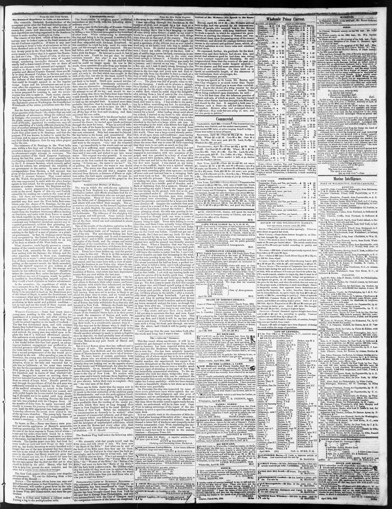

What, therefore, could legally prevent a concen tration of the vessels
https://www.loc.gov/resource/sn84026536/1851-04-25/ed-1/?sp=3

See the original pageVer la página original
The Wilmington Journal reported on April 25, 1851, that because St. Domingo (the Dominican Republic) was unrecognized by the United States, it was regarded as a piratical government rather than a nation requiring an act of Congress for military action. The newspaper suggested that U.S. vessels fitted out at Norfolk and New York could join other American ships to demand redress from the "emperor" of Hayti or demolish his regime. Additionally, it noted rumors that expeditions from the Southern States purportedly bound for Cuba were likely intended to land on the Dominican part of the island to assist the Dominicans and revolutionize the social and political condition of the blacks.
El Wilmington Journal comunicó el 25 de abril de 1851 que, por carecer de reconocimiento oficial por parte de Estados Unidos, Santo Domingo (la República Dominicana) era conceptuado más bien como un gobierno pirático que como una nación formal que demandase una ley del Congreso para emprender acciones militares. La hoja apuntaba que buques de guerra estadounidenses alistados en Norfolk y Nueva York podrían concurrir con otras unidades navales para exigir satisfacciones al «emperador» de Haití o derribar su régimen. Recogía además comentarios de que expediciones armadas procedentes de los estados del Sur, supuestamente destinadas a Cuba, tendrían por objeto desembarcar en la parte dominicana para auxiliar a los naturales y trastocar el ordenamiento político y social de las poblaciones negras.
Where this standsEn qué punto está
The full text of this article is still being prepared. Until it is ready, this page carries a summary, the passage found on the page, and the link to the original, which is always one click away.El texto completo de este artículo aún se está preparando. Hasta que esté listo, esta página lleva un resumen, el pasaje encontrado en la página y el enlace al original, que siempre está a un clic.
The passage this summary was written fromEl pasaje del que se escribió este resumen
The passage where this article was found, copied from the newspaper page itself, reading errors and all. This is exactly what the summary above is based on.El pasaje donde se encontró este artículo, copiado de la propia página del periódico, con sus errores de lectura y todo. Esto es exactamente aquello en lo que se basa el resumen de arriba.
mission by an act of Congress; but this necessity
does not exist towards a country unrecognized, and
existing in the light of a nest of pirates, or a pirati
cal government. In fact. St. Domingo never having
been recognized by the United States, is of no more
importance than a nest of pirates would be on any
of the keys or islands of the West India seas.
What, therefore, could legally prevent a concen
tration of the vessels recently fitted out at Norfolk
nnd New York, ostensibly for the coast of Africa,
from uniting with the Saranac, the Albany, and the
other American vessels in those seas, numbering
probably six or seven 1 what could prevent a junc
tion of these vessels on the coast of Ilayti, and com
pelling, at the cannon's month, the black scoundrel,
who calls himself emperor, to give redress, at all
hazards, and at every venture, for the wrongs and
insults he has inflicted on our citizens 1 Should he
refuse the American fleet, under the laws of nations,
and without any act of Congress, would be perfect-!
ly justified in demolishing that imperil regime, as
they would a band of pirates or lawless adventurers.
In the meantime, the expeditions of which we
have accounts from the Southern States, and pur
porting to be intended for Cuba, are much more
likely to be intended to land on the Dominican part
of the Island of Hayti, to assist the Dominicans, and
to commence what may bo considered a complete re
conquest of the blacks of St. Domingo, and an entire
revolution in their social and political condition.
Let us wait and see the result of these rumors and
How to cite this articleCómo citar este artículo
Wilmington Journal. (1851). Wilmington, N.C., April 25, 185125 de abril de 1851. DR in the American PressRD en la Prensa Norteamericana. Library of Congress, Chronicling America: https://www.loc.gov/resource/sn84026536/1851-04-25/ed-1/?sp=3
ReferencesReferencias
Library of Congress, Chronicling America: Wilmington Journal, April 25, 185125 de abril de 1851.
Send an observationEnviar una observación
Does this article connect with your family, your town, or something you know? Did we get something wrong? Write to us. Observations go to the editor's inbox and are read by a person.¿Este artículo conecta con su familia, su pueblo o algo que usted conoce? ¿Nos equivocamos en algo? Escríbanos. Las observaciones llegan al buzón del editor y las lee una persona.
Send observationEnviar observación